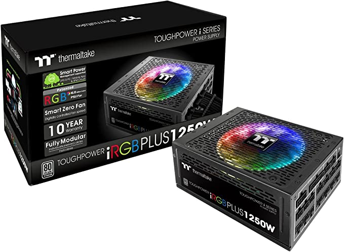

The Thermaltake Toughpower iRGB PLUS 1250W Titanium is the world
's first PSU pre-installed with a patented 16.8 million colors RGB fan that incorporate various high-tech components, leading technology and eco-friendy commendations. Featuring 80 PLUS Titanium certification with individually sleeved cable and flat cable, Toughpower iRGB PLUS Titanium Series adopts the highest quality components and fully modular design that always accommodate any mainstream build under any circumstance.
Features:
Smart Power Managemet (SPM): Monitor, analyze, and access single or multiple computer systems data across the network through PC and mobile devices, as well as to socialize with other SPM users. .
DPS G PC App: Freely adjust fan speed and customize the lighting effects with DPS G PC App. .
DPS G Mobile App: Fan failure, over temperature (over 140°F/60°C), and abnormal voltage level (over/under 5% of normal level) warning message will be pushed to the mobile devices and email. To save energy and electricity cost, users could arrange the schedule to shutdown the system via mobile app. .
80 plus Titanium Certified: Deliver up to 94% efficiency to promise low power losses.
Patented 16.8 Million Color Riing Plus 14 RGB LED Fan: Containing 12 controllable single LEDs, each Riing Plus RGB fan features compression blades and hydraulic bearing to guarantee high performance and low noise. .
Single +12V rail design: Eliminating the limitations caused by Voltage Distributions.
Digital Control Board: Switching transistors that perform only necessary steps and waste less energy given off as heat.
Read More
Return